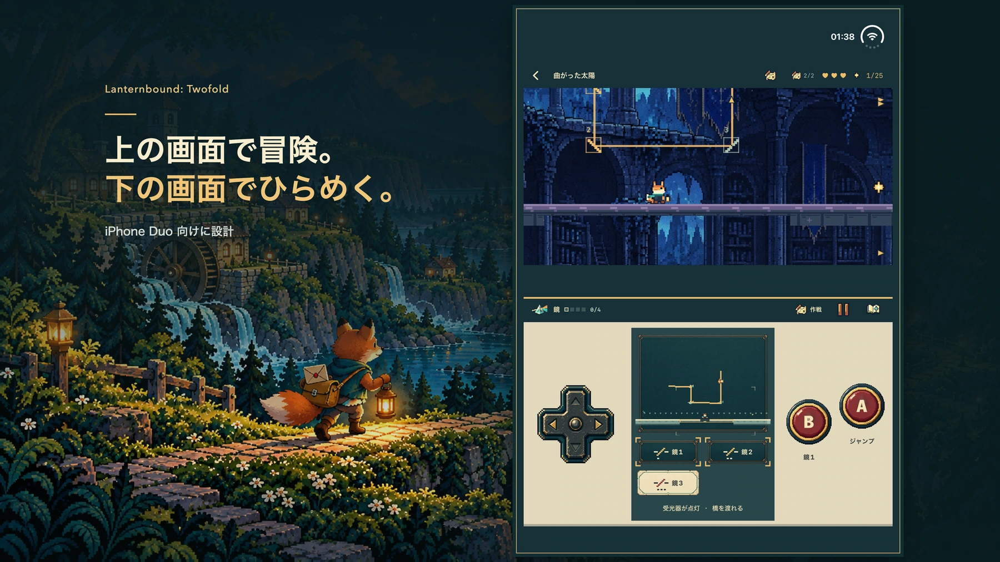

プロモーション用イラスト。実際のゲーム画面は下に掲載しています。
一通の手紙が、次の道を開く。
嵐で道が途切れ、新しい地図からいくつかの家が消えてしまった。あなたは若いキツネの郵便屋。隣人たちの手紙と、返事の途絶えた恩師への一通を届けます。配達が次の宛先へとつながり、本編の十二通を届ければ物語は結末へ。旅の後は、変わった場所をもう一度訪ねてみましょう。
12章の物語
12種類の道具
24個のおもいでの品（収集は自由）

iPhone Duo
上で冒険。下で次の一手。
上には冒険の世界、下には地図と道具、なじみのある操作ボタン。内側の画面を、世界が操作パネルの上に来る向きで使います。対応するフラットな配置でも、この分担を保ちます。
- 十字キーで移動、Aでジャンプ、Bで今の道具を使います。
- プランを開くと時間が止まります。地図で道を確かめ、準備ができたら冒険へ戻りましょう。
- 下で仕掛けを整え、上で跳び越える。考えた一手が、進める道を変えていきます。
目立たない道にも、物語がある。
蛾の印を追って暗い通路へ。上へ登れば別の道、下へ潜ればトンネルや隠し部屋が見つかるかもしれません。各章に二つずつある任意のおもいでの品には、それぞれ小さな物語が込められています。


一つを覚えたら、二つで考える。
光で道を照らし、ブーメランで鐘を鳴らす。足場を止め、鏡を回し、残像にスイッチを任せる。各章で四つの主な道具チャレンジを体験し、指定された二つの道具を順に使うリレー式の謎解きへ。寄り道では、使う順番が変わることも。

実際のゲーム画面を使用したプロモーション画像。ポスターを見る ↗

準備中 · 審査未提出・販売未開始
一度の購入で、旅のすべてを。
Duo専用の買い切り版として準備中です。一度の購入で全十二章を収録。広告、サブスクリプション、アプリ内課金はありません。米国での予定価格はUS $9.99。地域ごとの最終価格と配信状況は、正式なApp Storeページでお知らせします。
米国予定価格 US $9.99サポート ↗